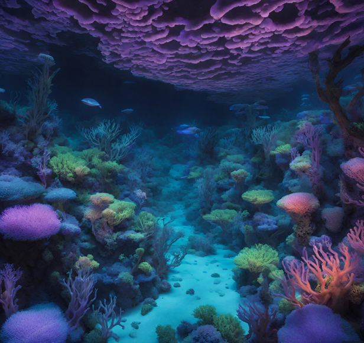

Flora

Description: The Coralite Grove is a vast, interconnected network of bioluminescent coral formations that span miles across Aquaria's ocean floor. Its vibrant hues of blue, purple, and green create a mesmerizing underwater landscape. They flourish in the nutrient-rich waters surrounding Aquaria's underwater cities, forming intricate reefs and submerged forests that provide habitat and sustenance for a myriad of marine life. Individual coral colonies within the Coralite Grove can persist for centuries, continuously growing and branching out to form new colonies over time.
Planet: Aquaria